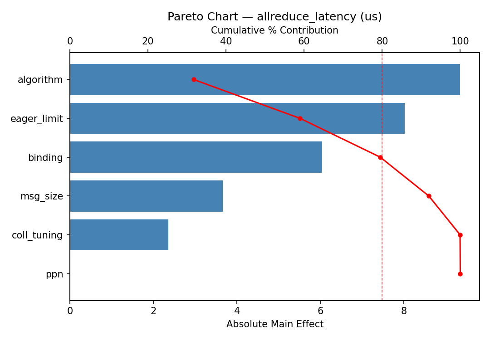
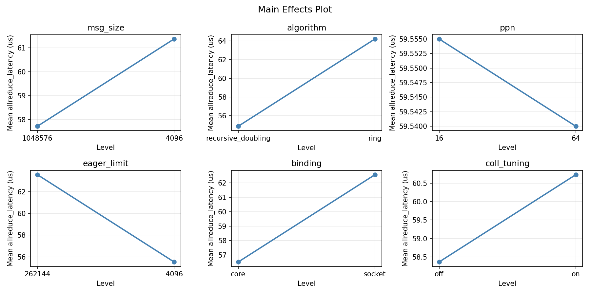
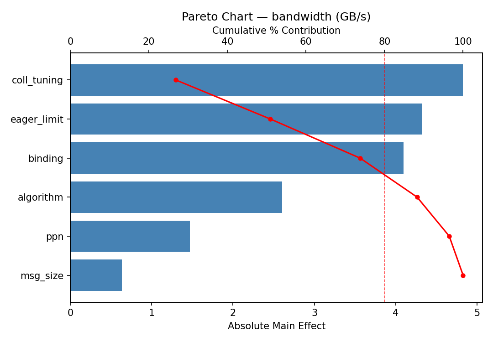
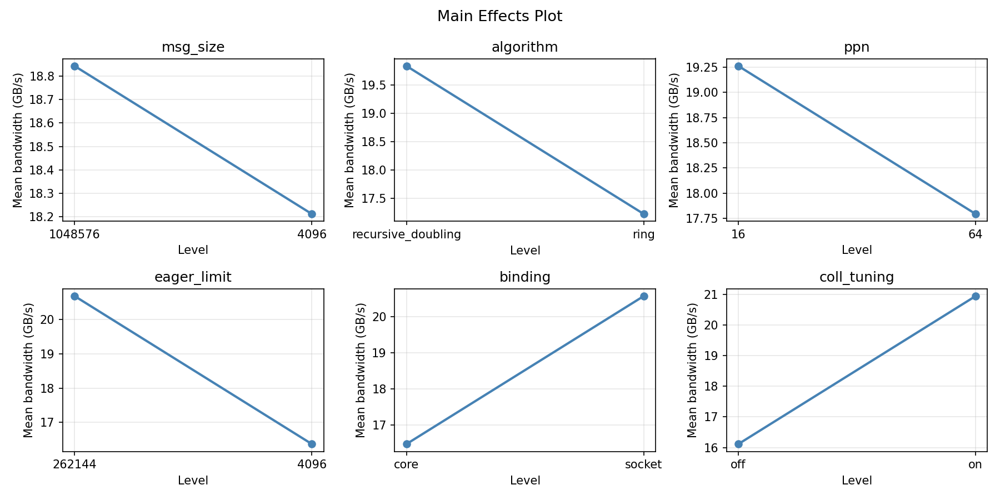
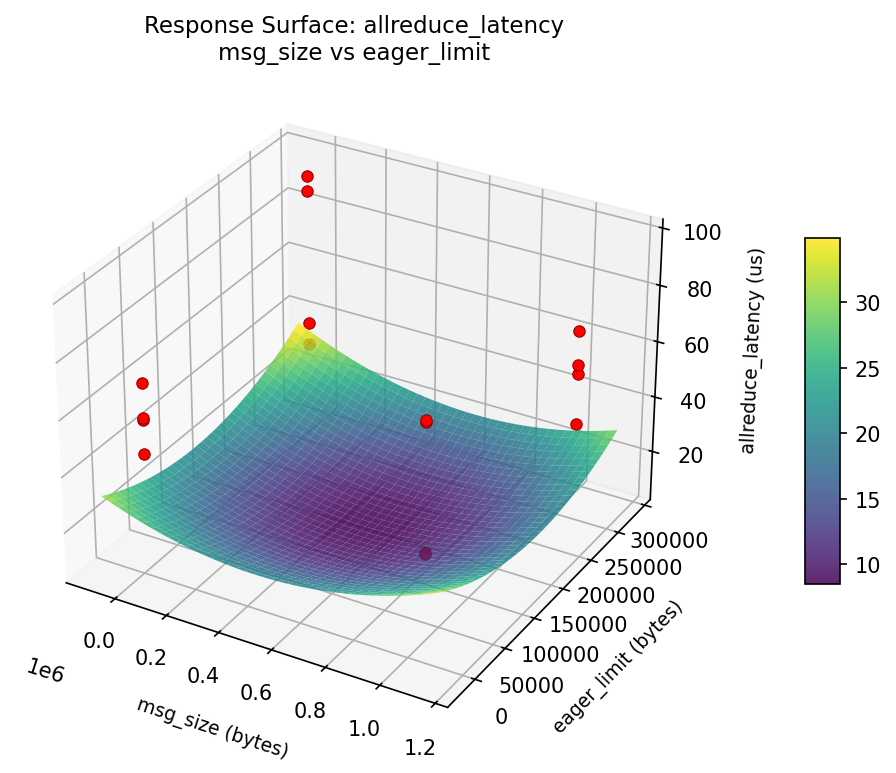
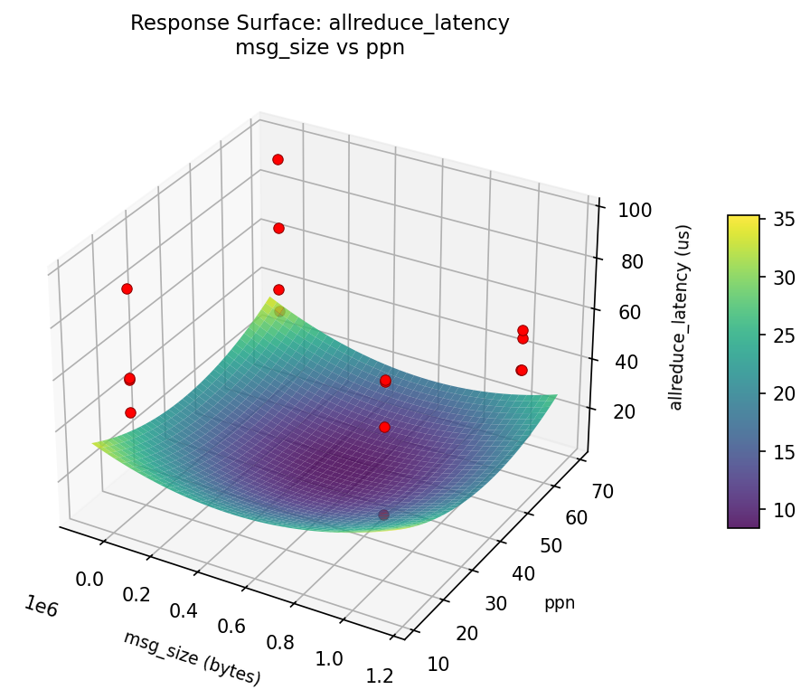
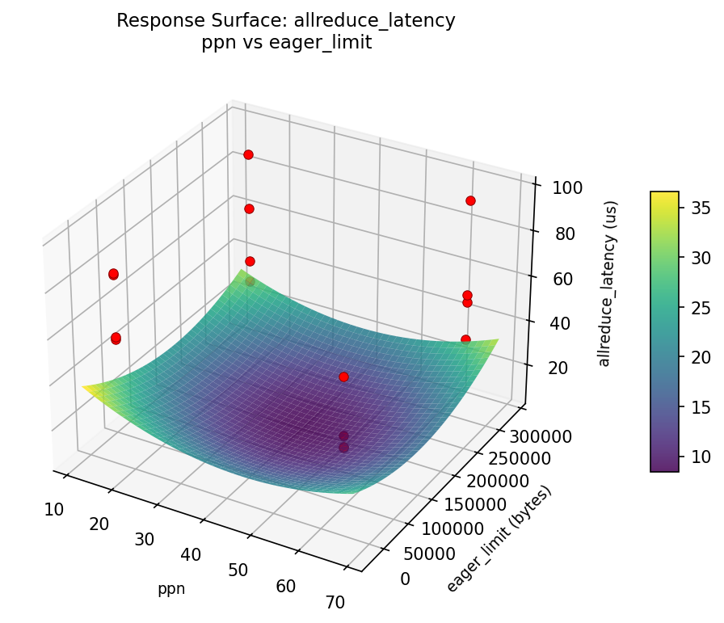
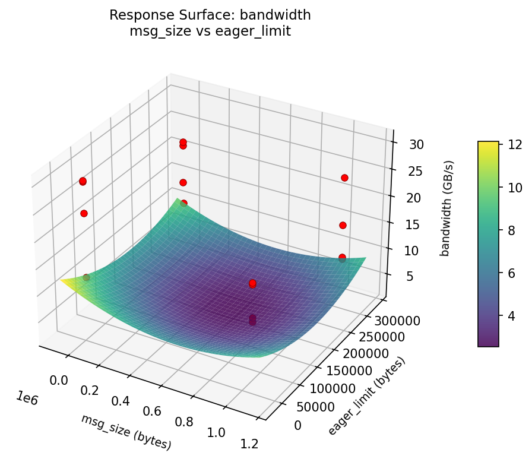
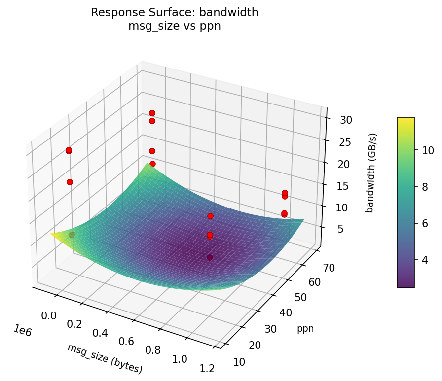
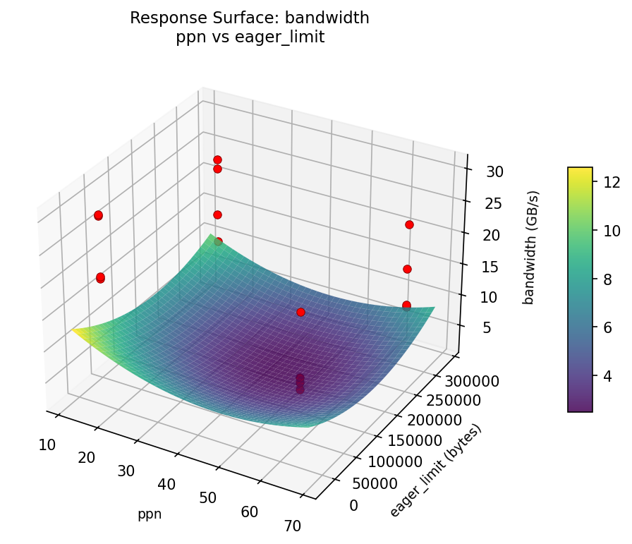

Tune MPI collective communication parameters for large-scale HPC clusters.
| Factor | Levels | Type | Unit |
|---|---|---|---|
msg_size | 4096, 1048576 | continuous | bytes |
algorithm | ring, recursive_doubling | categorical | |
ppn | 16, 64 | continuous | |
eager_limit | 4096, 262144 | continuous | bytes |
binding | core, socket | categorical | |
coll_tuning | on, off | categorical |
Fixed: nodes=32, mpi_impl=openmpi
| Response | Direction | Unit |
|---|---|---|
allreduce_latency | ↓ minimize | us |
bandwidth | ↑ maximize | GB/s |
The Plackett-Burman Design produces 16 runs. Each row is one experiment with specific factor settings.
| Run | Block | msg_size | algorithm | ppn | eager_limit | binding | coll_tuning |
|---|---|---|---|---|---|---|---|
| 1 | 1 | 1048576 | recursive_doubling | 64 | 4096 | core | on |
| 2 | 1 | 4096 | ring | 64 | 262144 | core | on |
| 3 | 1 | 4096 | recursive_doubling | 16 | 262144 | core | off |
| 4 | 1 | 1048576 | recursive_doubling | 64 | 262144 | socket | off |
| 5 | 1 | 4096 | recursive_doubling | 16 | 4096 | socket | on |
| 6 | 1 | 1048576 | ring | 16 | 262144 | socket | on |
| 7 | 1 | 4096 | ring | 64 | 4096 | socket | off |
| 8 | 1 | 1048576 | ring | 16 | 4096 | core | off |
| 9 | 2 | 1048576 | recursive_doubling | 64 | 4096 | core | on |
| 10 | 2 | 1048576 | recursive_doubling | 64 | 262144 | socket | off |
| 11 | 2 | 4096 | recursive_doubling | 16 | 4096 | socket | on |
| 12 | 2 | 4096 | ring | 64 | 4096 | socket | off |
| 13 | 2 | 4096 | ring | 64 | 262144 | core | on |
| 14 | 2 | 4096 | recursive_doubling | 16 | 262144 | core | off |
| 15 | 2 | 1048576 | ring | 16 | 262144 | socket | on |
| 16 | 2 | 1048576 | ring | 16 | 4096 | core | off |
Generated from actual experiment runs.
Pareto Chart

Main Effects Plot

Pareto Chart

Main Effects Plot

3D surfaces fitted with quadratic RSM. Red dots are observed data points.
Each plot shows predicted response (vertical axis) across two factors while other factors are held at center. Red dots are actual experimental observations.
allreduce_latency (us) — R² = 0.753, Adj R² = 0.753
Moderate fit — surface shows general trends but some noise remains.
Curvature detected in msg_size, algorithm — look for a peak or valley in the surface.
Strongest linear driver: algorithm (decreases allreduce_latency).
Notable interaction: msg_size × coll_tuning — the effect of one depends on the level of the other. Look for a twisted surface.
bandwidth (GB/s) — R² = 0.299, Adj R² = 0.299
Weak fit — interpret the surface shape with caution.
Curvature detected in msg_size, algorithm — look for a peak or valley in the surface.
Strongest linear driver: algorithm (decreases bandwidth).
Notable interaction: msg_size × coll_tuning — the effect of one depends on the level of the other. Look for a twisted surface.
allreduce: latency msg size vs eager limit

allreduce: latency msg size vs ppn

allreduce: latency ppn vs eager limit

bandwidth: msg size vs eager limit

bandwidth: msg size vs ppn

bandwidth: ppn vs eager limit
